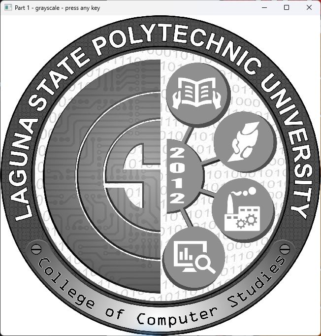
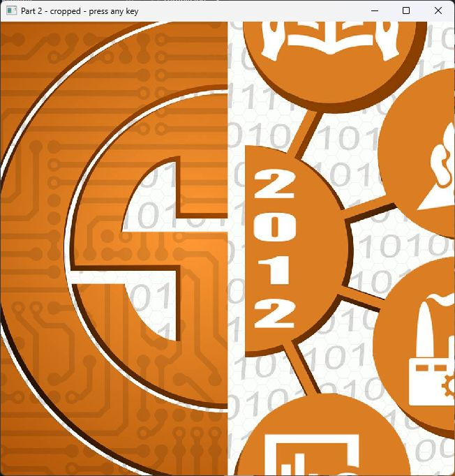
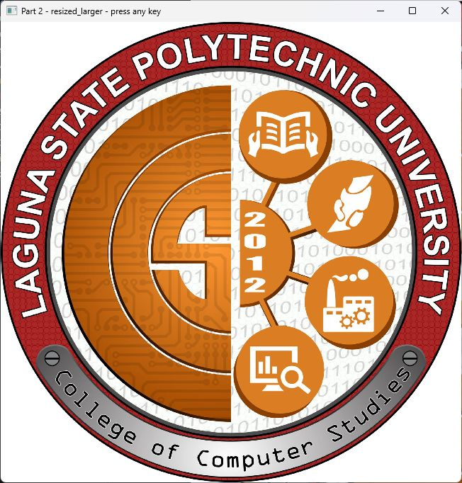
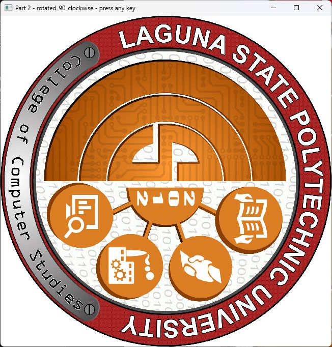
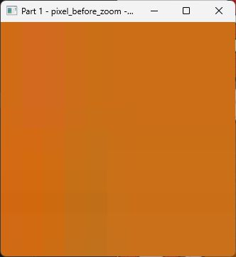
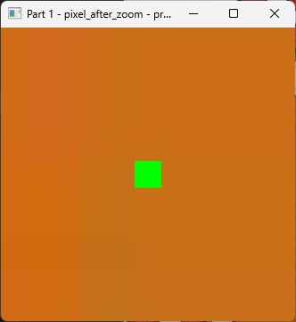

CSST106 Perception and Computer Vision | Laboratory Exercise 1
To understand how digital images are represented and manipulated and perform basic image operations using Python and OpenCV. The materials were a computer, Python, OpenCV, and a color sample image. The sample was the College of Computer Studies logo embedded in the laboratory handout.
The sample was loaded using cv2.imread, displayed using cv2.imshow, and inspected using img.shape. Its shape was (2048, 2048, 3): 2048 rows, 2048 columns, and three Blue, Green, Red channels. It contained 4,194,304 pixels stored as 8-bit unsigned integers.
The image was converted to grayscale using cv2.cvtColor(img, cv2.COLOR_BGR2GRAY). Its shape became (2048, 2048). At (x=512, y=1024), the BGR value was [23, 111, 201], and the corresponding grayscale intensity was 128. In a copy of the image, that pixel was changed to green [0, 255, 0]. An enlarged neighborhood made the change visible.
The central region was cropped using img[512:1536, 512:1536]. The whole image was resized to half and one and a half times each original dimension. Finally, it was rotated 90 degrees clockwise.
| Result | Width × height | Channels |
|---|---|---|
| Original | 2048 × 2048 | 3 |
| Grayscale | 2048 × 2048 | 1 |
| Center crop | 1024 × 1024 | 3 |
| Smaller resize | 1024 × 1024 | 3 |
| Larger resize | 3072 × 3072 | 3 |
| 90 degree clockwise rotation | 2048 × 2048 | 3 |
Images are numerical arrays whose values represent brightness and color. Grayscale conversion combines color channels, pixel editing assigns new values, cropping selects an area, resizing changes image dimensions, and rotation changes orientation. Correct channel ordering and row and column indexing are essential for these operations. These skills provide a foundation for document scanning, quality inspection, and object detection.
Activity source: CSST106 Lab Experiment 01 Images, Laboratory Exercise No. 1, Parts 1 and 2 and Summary Discussion. The sample choice, coordinates, scale factors, and clockwise direction were selected for this demonstration.
CSST106 Laboratory Exercise 1 | Image Results
Screenshots of the running OpenCV windows are fitted into equal display boxes. Captions state the underlying image dimensions; window sizes may differ.




Cropping and reducing both produced 1024 × 1024 images, but their content differs. Cropping retained the central area; reducing retained the entire logo at a lower resolution. Enlargement increased the sampling grid without recovering new source detail. The quarter-turn changed orientation while preserving pixel values; the dimensions remained unchanged because the image was square.
CSST106 Laboratory Exercise 1 | Pixel Study and Discussion
| Coordinate as x y | Original BGR | Grayscale |
|---|---|---|
| 0, 0 | [255, 255, 255] | 255 |
| 512, 1024 | [23, 111, 201] | 128 |
| 1024, 1024 | [177, 210, 243] | 216 |
Array indexing uses img[y, x]. At img[1024, 512], a copy was changed from [23, 111, 201] to [0, 255, 0]. Exactly one source pixel changed.


A grayscale image uses a two-dimensional intensity array. A three-channel color image uses height, width, and channel dimensions. The third array dimension represents color components, not scene depth. In this 8-bit sample, values range from 0 to 255. Grayscale conversion preserves the spatial dimensions while combining color components into one intensity value.
Channels separate color information, and pixel values encode the data processed by computer vision algorithms. OpenCV loads this color image in BGR order. Misreading this as RGB exchanges the red and blue components. The raw color array uses 12,582,912 bytes, and the grayscale array uses 4,194,304 bytes, excluding array overhead. Compressed file sizes are different.
Document scanners can crop text and convert it to grayscale before OCR. Manufacturing inspection can focus on an ROI to examine defects. Traffic systems can resize camera frames and restrict processing to roadway regions. Photo and scanning tools use resizing and rotation to prepare images for viewing and further processing.
The complete task answers, source references, and copy-and-paste code are provided in ANSWERS.md. Measurements and window screenshots were produced by executing part1.py and part2.py with the included sample.